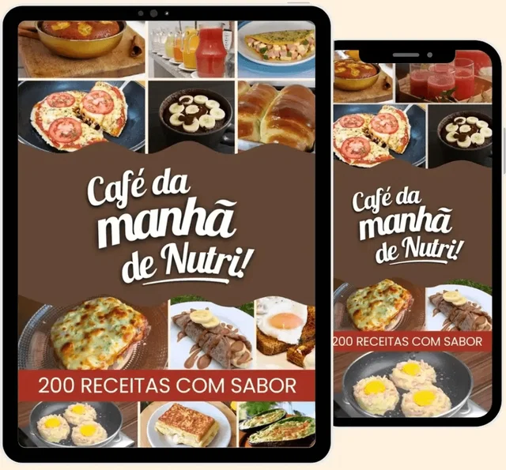
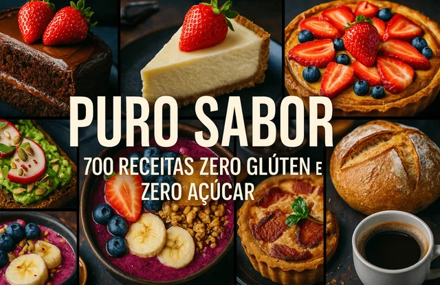
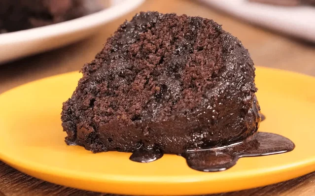
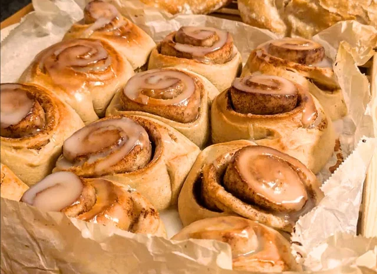

Mais variedade à mesa
Tenha uma coleção com mais de 200 receitas para buscar inspiração e mudar o café da manhã conforme a sua vontade.
UMA NOVA RECEITA. UMA MANHÃ MELHOR.
Troque a mesmice por mais de 200 receitas sem glúten e sem açúcar. Descubra novas combinações e opções prontas em menos de 10 minutos para começar o dia com sabor.
Quero renovar meu café da manhãSua próxima receita favorita pode estar aqui.

VONTADE DE VARIAR, SEM COMPLICAR
Quando faltam ideias, a gente acaba preparando sempre a mesma coisa. O Receitinha do Dia coloca novas possibilidades ao seu alcance — para você escolher, experimentar e encontrar seus favoritos.
Tenha uma coleção com mais de 200 receitas para buscar inspiração e mudar o café da manhã conforme a sua vontade.
Descubra opções de preparo em menos de 10 minutos para os dias em que você quer variar, mas tem pouco tempo.
Consulte suas receitas quando precisar de uma ideia nova. Escolha o que combina com o dia e faça da cozinha um momento seu.
SEU NOVO REPERTÓRIO NA COZINHA
Do café rápido antes de sair ao café da manhã que você quer aproveitar com calma: uma coleção de ideias para tornar esse momento mais gostoso.
Quero descobrir essas receitasRECEITINHA DO DIA
receitas de café da manhã
PARA COMPLETAR SUA COLEÇÃO
Na página de compra, você também pode escolher estes conteúdos adicionais e levar novas ideias para outros momentos do dia.

ALMOÇO · LANCHE · JANTAR
Amplie seu repertório com uma coleção de receitas sem glúten e sem açúcar. Mais ideias para mudar o cardápio e encontrar novos favoritos, do almoço ao jantar.
Mais variedade para suas refeições
UM CAFÉ DA TARDE COM CARINHO
O cheirinho de bolo pode transformar uma pausa simples em um momento especial. Explore uma coleção dedicada a bolos e encontre inspiração para acompanhar seu café.
Para quem ama um bolo caseiro
AROMA DE CANELA NA COZINHA
Descubra novas ideias de rolinhos de canela para um café especial ou para compartilhar à mesa. Uma coleção para quem gosta de experimentar novos sabores.
Mais de 30 receitas para explorarDÊ MAIS USO À SUA AIRFRYER
Sua AirFryer pode participar de muito mais refeições. Conheça 102 receitas para explorar outras possibilidades e ampliar seu repertório de preparos.
Ideias para aproveitar seu aparelhoO PRAZER DO PÃO FEITO EM CASA
Explore a panificação sem glúten e encontre novas ideias para seus pães. Uma opção para quem quer levar o aroma de pão caseiro para o café da manhã ou da tarde.
Inspiração para a sua panificaçãoAdicionais opcionais, escolhidos separadamente na página de compra.
Quero escolher minhas receitasDA ESCOLHA À SUA COZINHA
Escolha sua coleção e prepare-se para descobrir novas ideias.
Acesse a página de compra do Receitinha do Dia e escolha os complementos que desejar.
Finalize sua compra pela Cakto usando Pix ou cartão de crédito.
Após a confirmação do pagamento, siga as instruções de acesso enviadas ao e-mail da compra.
RECEITINHA DO DIA
Mais de 200 possibilidades para sair da repetição e redescobrir o prazer de preparar seu café da manhã.
DÊ UM NOVO SABOR À SUA ROTINA
Conheça o material com a garantia apresentada na oferta.
PODE PERGUNTAR
Tire suas dúvidas e dê o próximo passo para variar seu café da manhã.
Uma coleção com mais de 200 receitas de café da manhã sem glúten e sem açúcar, com opções de preparo em menos de 10 minutos. Um ebook para consultar e buscar inspiração para a sua rotina.
O Receitinha do Dia é o ebook principal. As coleções de 700 receitas, bolos, rolinhos de canela, AirFryer e pães sem glúten são adicionais opcionais. Você escolhe separadamente quais deseja acrescentar na página de compra.
Após a confirmação do pagamento, siga as instruções de acesso enviadas pela plataforma ao e-mail informado na compra. O material é um ebook; você pode consultar suas receitas conforme o formato disponibilizado. Confira também sua caixa de spam.
Sim. A página de pagamento oferece Pix e cartão de crédito. Escolha a opção que preferir para finalizar sua compra.
A oferta apresenta garantia de 7 dias. As condições e as instruções para solicitar reembolso estão disponíveis na plataforma de venda.